Μέρος 3: Εφαρμογή Α¶
Fs = 1000 # συχνότητα δειγματοληψίας 1000 Hz
Ts = 1 / Fs # περίοδος δειγματοληψίας
L = 1000 # μήκος σήματος (αριθμός δειγμάτων)
T = L * Ts # διάρκεια σήματος
t = np.arange(0, (L - 1) * Ts, Ts) # χρονικές στιγμές υπολογισμού του σήματος
x = np.sin(2 * np.pi * 30 * t) \
+ 0.8 * np.sin(2 * np.pi * 80 * (t - 2)) \
+ np.sin(2 * np.pi * 60 * t) # συνιστώσα 60 Hz
# Σχεδιάστε το σήμα στο πεδίο του χρόνου
fig, ax = plt.subplots()
fig.set_size_inches(18.5, 10.5)
ax.plot(t, x)
ax.set(xlabel='t (sec)', ylabel='Amplitude',
title='Time domain plot of x')
ax.grid()
ax.axis([0, 0.2, -2.5, 2.5])
plt.savefig('Time domain plot of x')
plt.show()
# Υπολογίστε τον διακριτό μετασχηματισμό Fourier
def nextpow2(i): # επιστρέφει το n, τέτοιο ώστε 2^n >= L
n = 0
while 2 ** n < i:
n += 1
return n
N = 2 ** nextpow2(L) # μήκος μετασχηματισμού Fourier.
# η nextpow2 βρίσκει τη δύναμη του 2 που
# είναι μεγαλύτερη ή ίση από το όρισμα L
Fo = Fs / N # ανάλυση συχνότητας
f = np.arange(0, N) * Fo # διάνυσμα συχνοτήτων
X = np.fft.fft(x, N) # αριθμητικός υπολογισμός του διακριτού μετασχηματισμού Fourier (DFT) για Ν σημεία
# Σχεδιάστε το σήμα στο πεδίο συχνότητας
# Αφού το σήμα είναι πραγματικό μπορείτε να σχεδιάσετε μόνο τις θετικές συχνότητες
fig, ax = plt.subplots()
fig.set_size_inches(18.5, 10.5)
ax.plot(f[np.arange(1, N)], abs(X[np.arange(1, N)]))
ax.set(xlabel='f (Hz)', ylabel='Amplitude',
title='Frequency domain plot of x')
ax.grid()
plt.savefig('Frequency domain plot of x')
plt.show()
f = f - Fs / 2 # ολίσθηση συχνοτήτων προς τα αριστερά κατά –Fs/2
X = np.fft.fftshift(X) # ολίσθηση της μηδενικής συχνότητας στο κέντρο του φάσματος
fig, ax = plt.subplots()
fig.set_size_inches(18.5, 12)
ax.plot(f, abs(X))
ax.set(xlabel='f (Hz)', ylabel='Amplitude',
title='Two sided spectrum of x')
ax.grid()
plt.savefig('Two sided spectrum of x')
plt.show()
# Υπολογίστε την ισχύ
power = np.multiply(X, np.conj(X)) / N / L # υπολογισμός πυκνότητας ισχύος
fig, ax = plt.subplots()
fig.set_size_inches(18.5, 12)
ax.plot(f, power)
ax.set(xlabel='Frequency (Hz)', ylabel='Power',
title='Periodogram')
ax.grid()
plt.savefig('Periodogram')
plt.show()
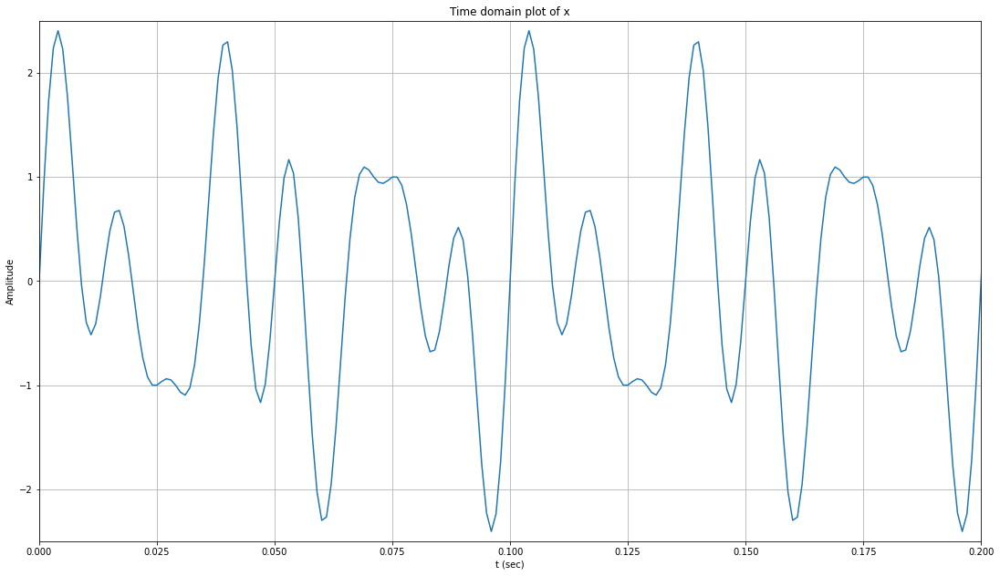
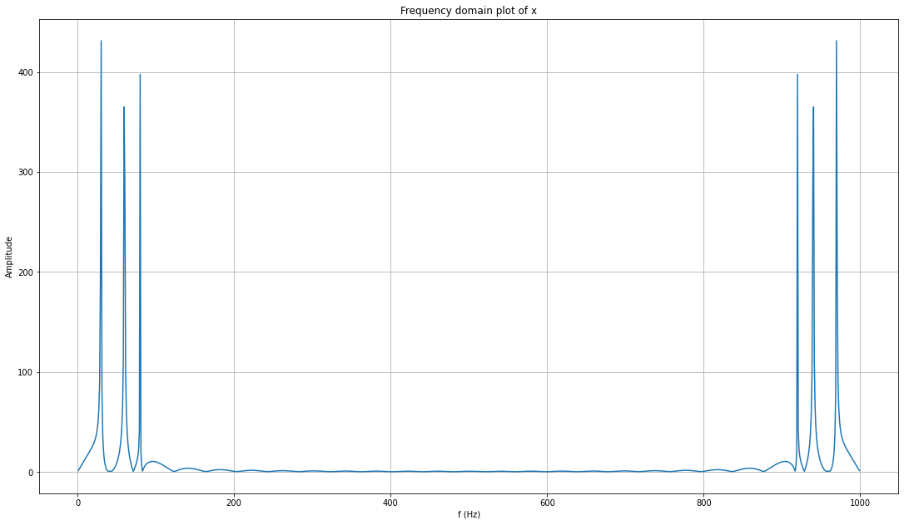
 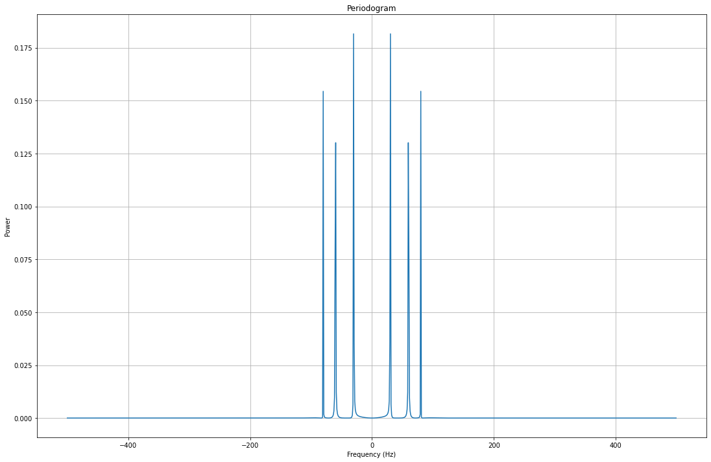
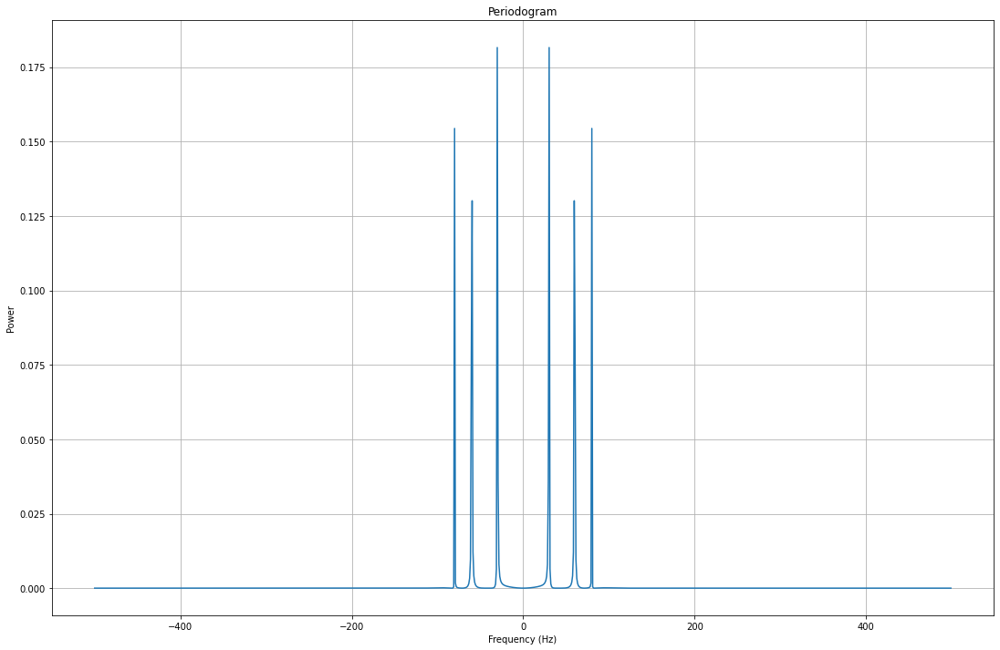
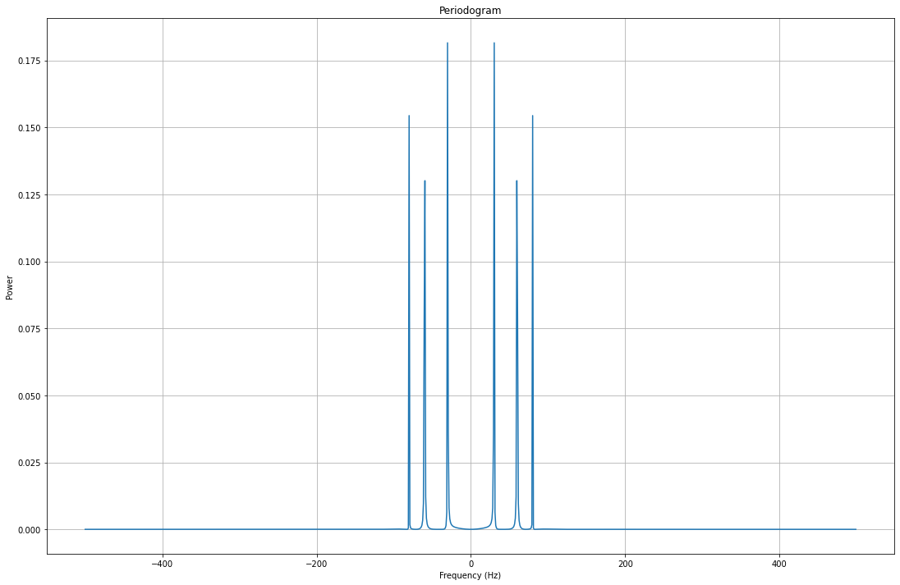
# Part 2 Προσθέστε θόρυβο στο σήμα
# Συμπληρώστε τον κώδικα για τη δημιουργία του σήματος θορύβου n με τη βοήθεια της συνάρτησης randn.
# Το διάνυσμα θορύβου n θα πρέπει να είναι του ίδιου μεγέθους με αυτό της ημιτονοειδούς κυματομορφής x του πρώτου μέρους.
# Σχεδιάστε το σήμα θορύβου στο διάστημα από 0 έως 0.2 sec και κλίμακα σε από -2 έως 2.
# Υπολογίστε το περιοδόγραμμα του n και σχεδιάστε την πυκνότητα φάσματος ισχύος του σήματος θορύβου.
# Προσθέστε το σήμα θορύβου και το x για να λάβετε το σήμα με θόρυβο s.
# Σχεδιάσατε το σήμα με θόρυβο s στο πεδίο του χρόνου στην περιοχή 0 έως 0.2 sec
# και κλίμακα από -2 έως 2 καθώς και το αμφίπλευρο φάσμα του.
rand_n = random.randn(np.size(x))
fig, ax = plt.subplots()
fig.set_size_inches(18.5, 10.5)
ax.plot(t,rand_n)
ax.set(xlabel='t (sec)', ylabel='Amplitude',
title='Time domain plot of n')
ax.axis([0, 0.2, -2, 2])
ax.grid()
plt.show()
N = 2^nextpow2(L)
Fo=Fs/N
f=(np.arange(0,N))*Fo
rand_N=np.fft.fft(rand_n,N)
f=f-Fs/2
rand_N=np.fft.fftshift(rand_N)
power_n=np.multiply(rand_N,np.conj(rand_N))/N/L
fig, ax = plt.subplots()
fig.set_size_inches(18.5, 10.5)
ax.plot(f,power_n)
ax.set(xlabel='Frequency (Hz)', ylabel='Power',
title='Periodogram of n')
ax.grid()
plt.show()
s = x + rand_n
fig, ax = plt.subplots()
fig.set_size_inches(18.5, 10.5)
ax.plot(t,s)
ax.set(xlabel='t (sec)', ylabel='Amplitude',
title='Time domain plot of s')
ax.axis([0, 0.2, -2, 2])
ax.grid()
plt.show()
N = 2^nextpow2(L)
Fo=Fs/N
f=(np.arange(0,N))*Fo
S=np.fft.fft(s,N)
f=f-Fs/2
S=np.fft.fftshift(S)
fig, ax = plt.subplots()
fig.set_size_inches(18.5, 10.5)
ax.plot(f,abs(S))
ax.set(xlabel='f (Hz)', ylabel='Amplitude',
title='Two sided spectrum of s')
ax.grid()
plt.show()
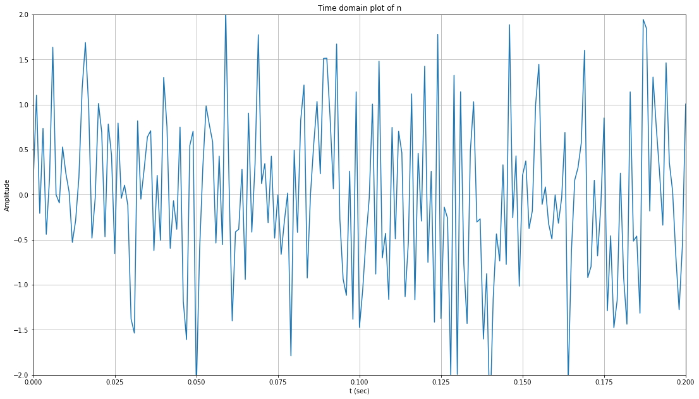
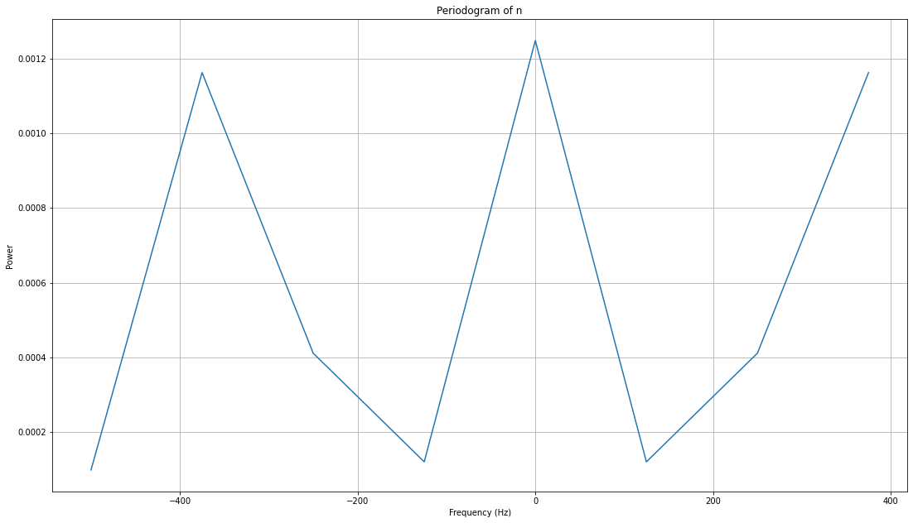
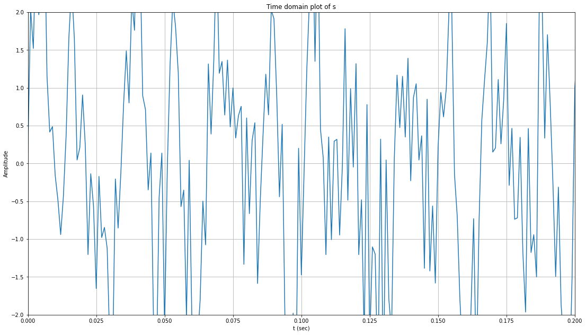
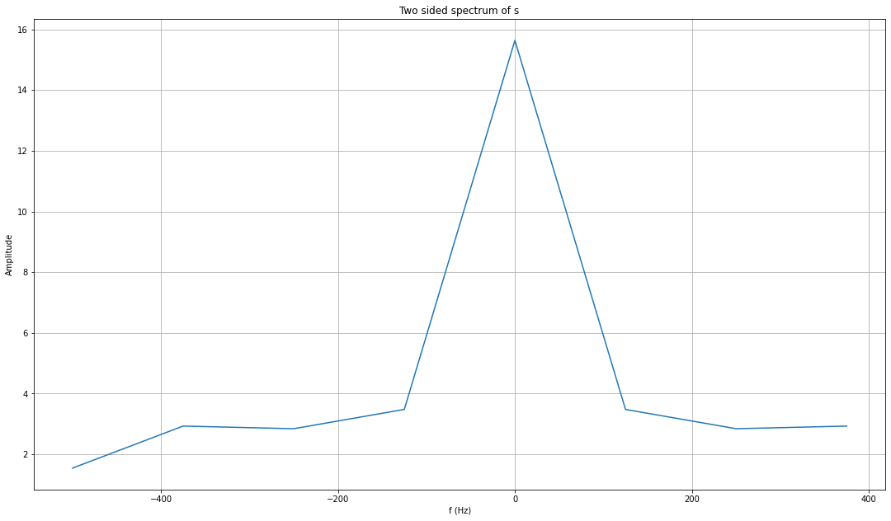
# Part 3. Πολλαπλασιασμός σημάτων
# Συμπληρώστε τον κώδικα δημιουργίας ενός ημιτονοειδούς σήματος συχνότητας
# 100 Hz και πολλαπλασιάστε με το προηγούμενο σήμα s.
# Τα δύο σήματα θα πρέπει να είναι του ίδιου μεγέθους.
# Σχεδιάστε το αποτέλεσμα στο πεδίο του χρόνου στην περιοχή 0 έως 0.2 sec
# και κλίμακα από -2 έως 2 καθώς και στο πεδίο της συχνότητας
# χρησιμοποιώντας τη συνάρτηση fftshift.
s_mul = np.sin(2 * np.pi * 100 * t)
s_final = s * s_mul
fig, ax = plt.subplots()
fig.set_size_inches(18.5, 10.5)
ax.plot(t, s_final)
ax.set(xlabel='t (sec)', ylabel='Amplitude',
title='Time domain plot of s * sin(2pi*100t)')
ax.axis([0, 0.2, -2, 2])
ax.grid()
plt.savefig('Time domain plot of s * sin(2pi*100t)')
plt.show()
N = 2 ** nextpow2(L)
Fo = Fs / N
f = (np.arange(0, N)) * Fo
S_final = np.fft.fft(s_final, N)
f = f - Fs / 2
S_final = np.fft.fftshift(S_final)
fig, ax = plt.subplots()
fig.set_size_inches(18.5, 10.5)
ax.plot(f, abs(S_final))
ax.set(xlabel='f (Hz)', ylabel='Amplitude',
title='Two sided spectrum of s * sin(2pi*100t)')
ax.grid()
plt.savefig('Two sided spectrum of s * sin(2pi*100t)')
plt.show()
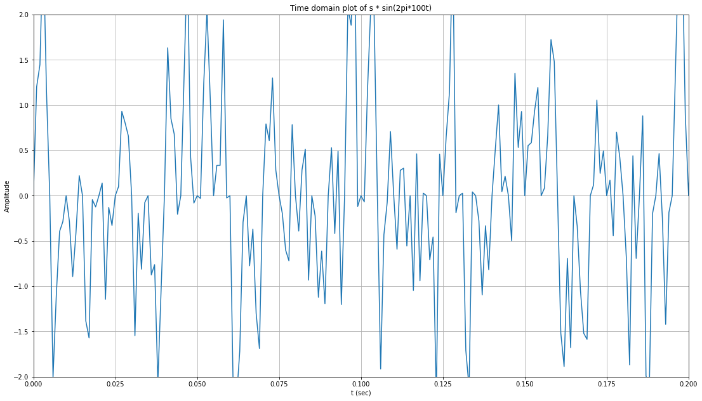
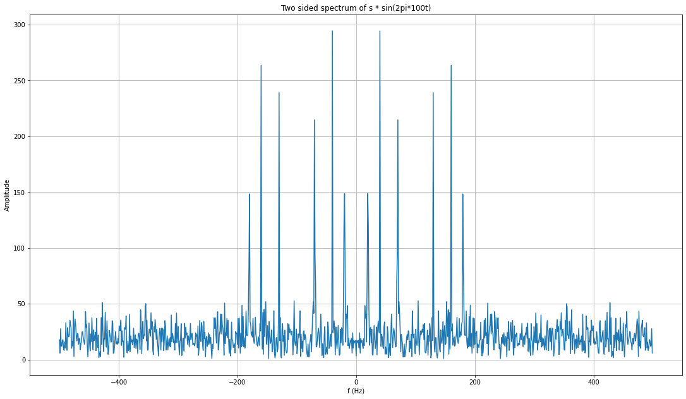